MY STORY
Water is the most used and least understood resource on Earth.
I've spent my career inside the water industry, helping factories and cities treat water, reuse it, and stop wasting it. The photos next to this text come from those days: dyehouses in Bangladesh, treatment plants, a sand filter built out of an oil drum on a farm. Places like these taught me more about water than any book, and almost nobody outside the industry ever sees them.
And after all these years, what surprises me most isn't how scarce water is getting. It's how little any of us actually know about where it goes. I include myself in that. The deeper I go into this industry, the more I realize how much I still have to learn.
That's what this channel is for.
Thirsty Planet is my attempt to explain water the way I wish someone had explained it to me: clearly, honestly, and with real numbers. Because most of the water you use in a day never touches your skin. It grew the cotton in your jeans, filled the dye baths for your t-shirt, fed the cow behind your glass of milk, and cooled the machines that made the chip inside your phone. Post by post, we follow that hidden water together, and I promise the answers will change how you look at almost everything you own.
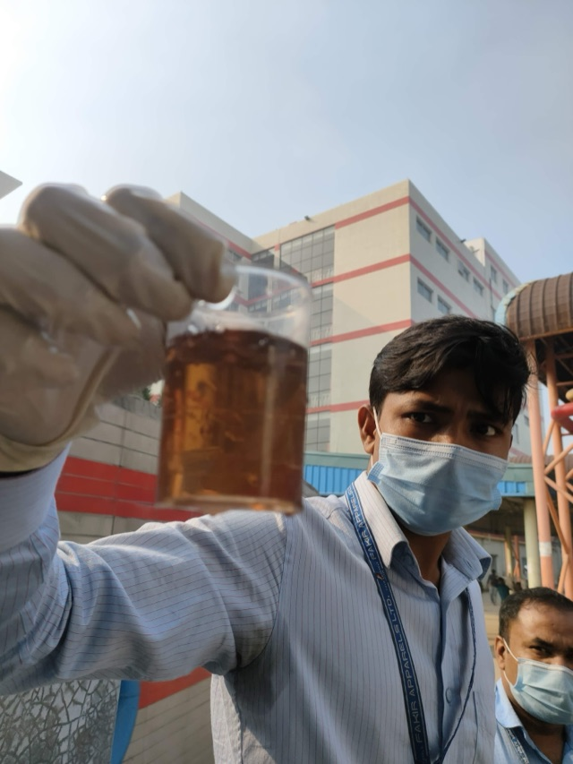
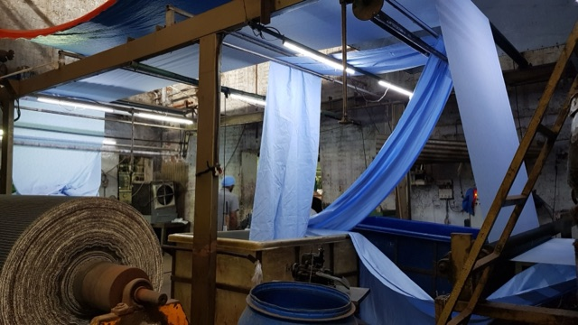
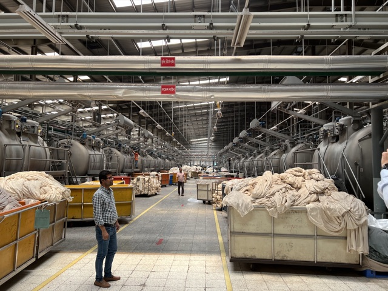
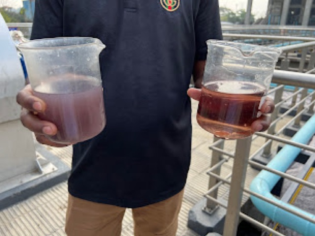
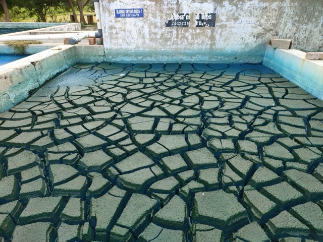
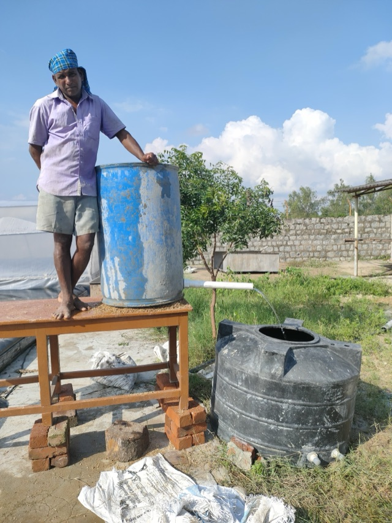
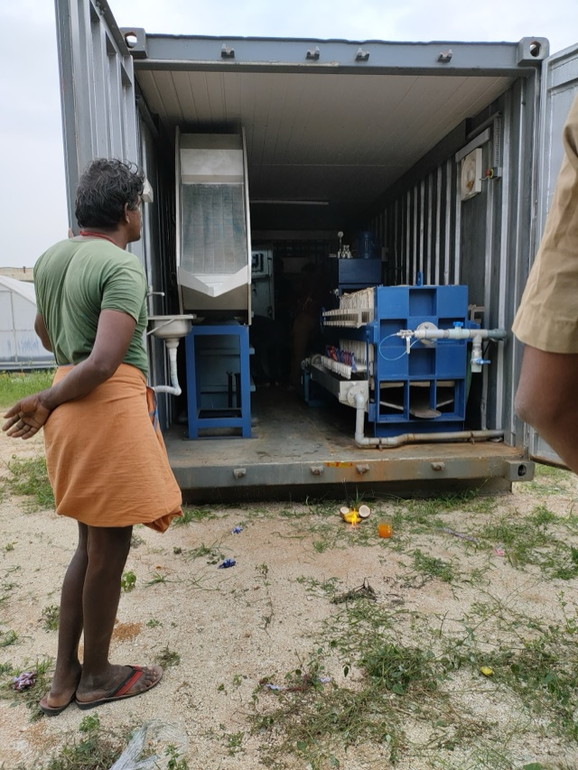
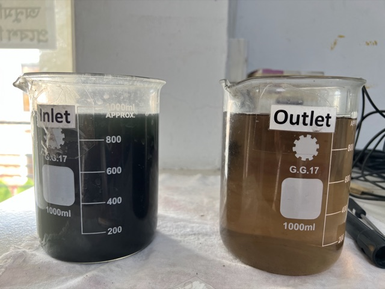
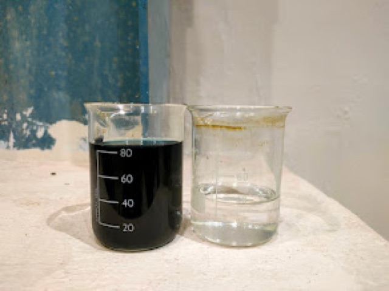
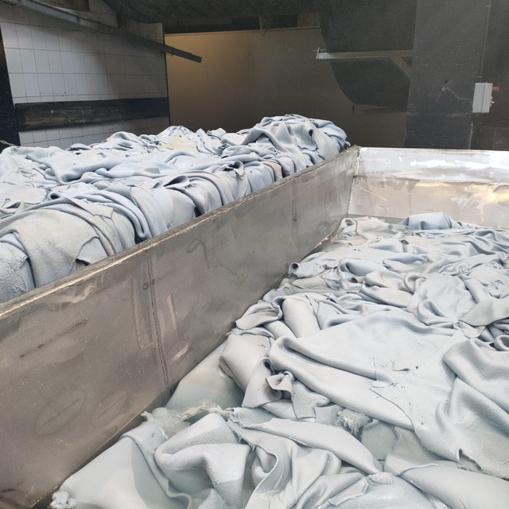
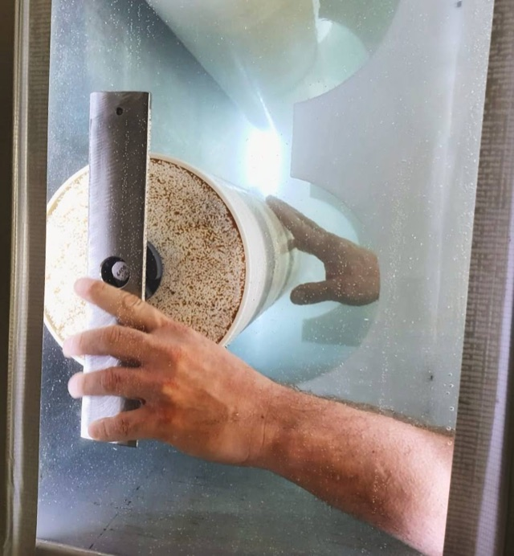
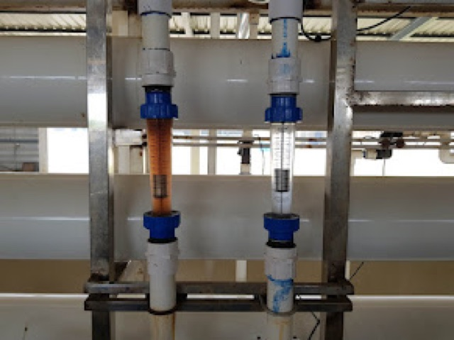